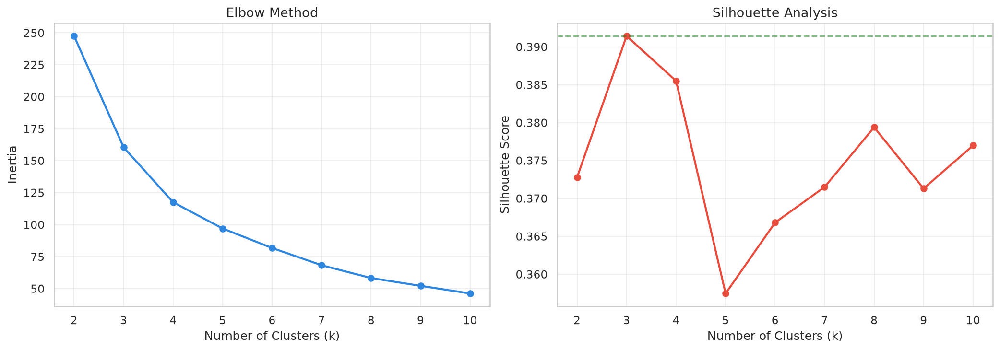
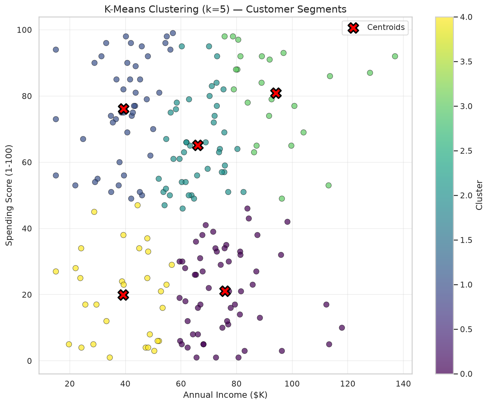
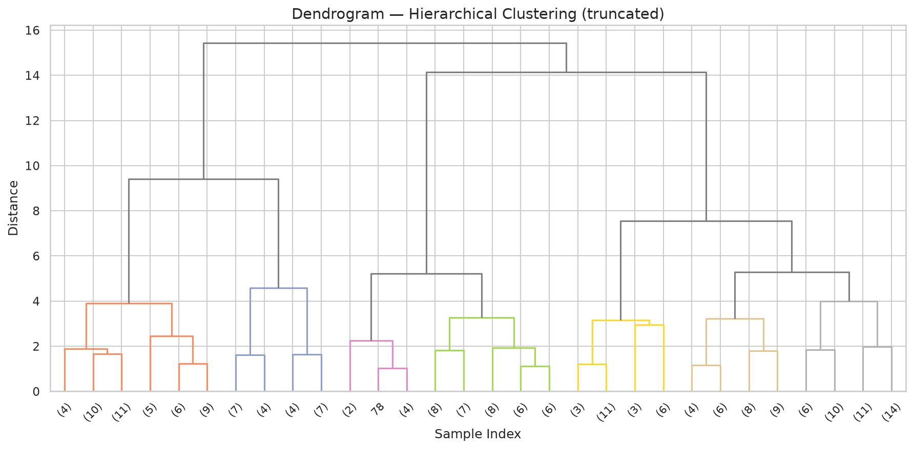
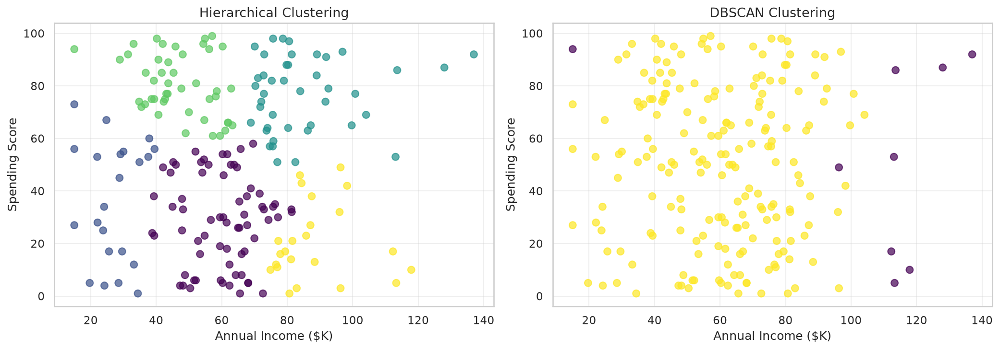

📊 Dataset: Mall Customers (200 customers, Income + Spending Score)
df = pd.read_csv('mall_customers.csv')
"kw">print(df.head())
"kw">print(f'Shape: {df.shape}')
features = ['AnnualIncome_k', 'SpendingScore']
X = df[features].copy()"kw">from sklearn.cluster "kw">import KMeans
"kw">from sklearn.metrics "kw">import silhouette_score
inertias, silhouettes = [], []
"kw">for k "kw">in range(2, 11):
km = KMeans(n_clusters=k, random_state=42, n_init=10)
labels = km.fit_predict(X_scaled)
inertias.append(km.inertia_)
silhouettes.append(silhouette_score(X_scaled, labels))
"kw">print(f'k={k}: Inertia={km.inertia_:.0f}, Silhouette={silhouettes[-1]:.4f}')
Elbow method and silhouette analysis for choosing k
km = KMeans(n_clusters=5, random_state=42, n_init=10)
df['Cluster'] = km.fit_predict(X_scaled)
"kw">class="cmt"># Print cluster profiles
"kw">for c "kw">in sorted(df['Cluster'].unique()):
sub = df[df['Cluster'] == c]
"kw">print(f'Cluster {c}: n={len(sub)}, Income=${sub["AnnualIncome_k"].mean():.0f}K, '
f'Spending={sub["SpendingScore"].mean():.0f}')
K-Means customer segments with centroids
"kw">from sklearn.cluster "kw">import AgglomerativeClustering, DBSCAN
"kw">class="cmt"># Hierarchical
hc = AgglomerativeClustering(n_clusters=5, linkage='ward')
df['HCluster'] = hc.fit_predict(X_scaled)
"kw">class="cmt"># DBSCAN
db = DBSCAN(eps=0.5, min_samples=5)
df['DBCluster'] = db.fit_predict(X_scaled)
"kw">print(f'DBSCAN: {len(set(df["DBCluster"])-{-1})} clusters, '
f'{sum(df["DBCluster"]==-1)} noise points')
Hierarchical clustering dendrogram (truncated)

Hierarchical (left) vs DBSCAN (right)
1️⃣ K-Means 需要预先指定 k。如果 k 选错了会怎样？
2️⃣ Silhouette Score 的取值范围是多少？多少算"好"？
3️⃣ DBSCAN 找到了多少个聚类？为什么和其他方法不一样？
4️⃣ Cluster 2 ("Impulsive") 收入低但消费高。作为商场经理，你会怎么做？